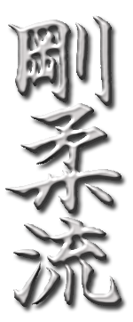

Годзю-рю (яп. 剛柔流 годзю:рю:) — один из основных окинавских стилей каратэ, сочетающий комбинации жёсткой и мягкой техники. Основанная в 1920-х годах мастером Тёдзюном Мияги (1888—1953). Один из наиболее распространённых стилей каратэ, существующий в трёх основных вариантах — окинавском, японском и американском. Морио Хигаонна — выдающийся мастер окинавского каратэ, является основателем и шеф-инструктором Международной Федерации Окинавского Каратэ-до (International Okinawan Goju-ryu Karate-do Federation, IOGKF), является обладателем 10-го дана.
Истоки стиля Годзю-рю связаны, прежде всего, с именем Канрё Хигаонны, который был создателем и видным представителем окинавского стиля Наха-тэ. У Хигаонны обучался и будущий создатель Годзю-рю Тёдзюн Мияги.
Годзю-рю через Мияги и Хигаонны перенял принципы жёстких систем южно-китайского ушу, сохранив в себе истинное искусство реального поединка.
Годзю-рю является стилем, использующим внутреннюю энергетику человека. В основе карате Годзю-рю лежит техника ближнего боя, включающяя в себя удары локтями, коленями, бросковую технику, захваты и борьбу в партере, что даёт возможность применять его в условиях ограниченного пространства (лифт, транспорт, толпа).
От современного спортивного карате отличается энергетической направленностью и высокой боевой эффективностью.
В годзю-рю каратэ есть 10 кю (ученических степеней) и 10 данов (мастерских степеней). Номер кю уменьшается с ростом мастерства, номер дана — возрастает.